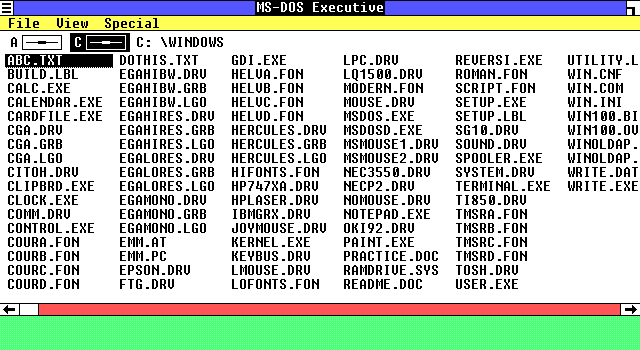
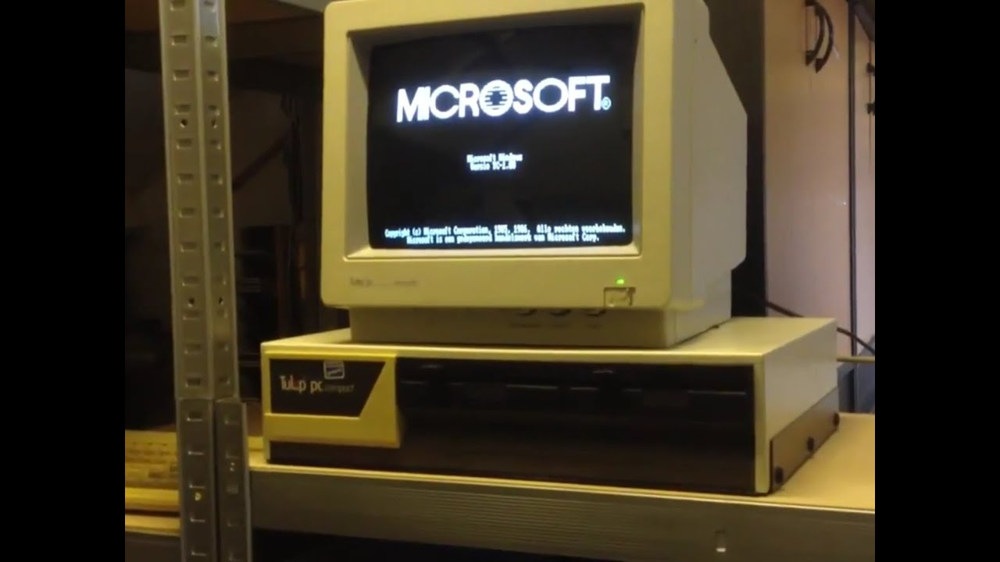

Windows 1.0, випущена в 1985 році, була першою версією операційної системи Microsoft Windows. Ця
версія встановила початок епохи графічних користувацьких інтерфейсів для персональних комп'ютерів.
Windows 1.0 пропонувала графічне середовище роботи з вікнами, що було значним вдосконаленням
порівняно з командним рядковим інтерфейсом DOS.
Серед основних функцій Windows 1.0 були програми, такі як Paint, Write, і MS-DOS Executive, які
надали користувачам можливість маніпулювати файлами, створювати текстові документи та малюнки у
зручному графічному середовищі. Однак ця версія Windows була обмеженою в порівнянні з подальшими
версіями, оскільки вона не підтримувала багатозадачність, мережеві функції та інші сучасні
можливості.
Windows 1.0 відіграла важливу роль у розвитку персональних комп'ютерів, встановивши стандарт
графічних інтерфейсів, який пізніше був подальше вдосконалений у подальших версіях Windows. Вона
відкрила шлях для подальшого зростання та розвитку комп'ютерних технологій, що привело до сучасних
операційних систем, які ми використовуємо сьогодні.
2. ІНТЕРФЕЙС
Інтерфейс Windows 1.0 був досить простим, але він встановив стандарт для майбутніх графічних
інтерфейсів комп'ютерів. Основним елементом були вікна, які користувач міг переміщати, мінімізувати,
максимізувати та закривати за допомогою миші або клавіатури.
Меню було розташовано вгорі кожного вікна, де користувач міг здійснювати різні операції, такі як
відкриття нових файлів, копіювання та вставка даних, а також вибір інструментів у програмах,
наприклад, Paint або Write.
Більшість елементів інтерфейсу були представлені за допомогою текстових іконок, які відображали
функціональність програми чи операції. Колірна палітра була досить обмеженою, зазвичай обмежувалася
до монохромних або обмежених кольорів.
Хоча інтерфейс Windows 1.0 може виглядати примітивним у порівнянні з сучасними версіями, він
встановив фундамент для подальшого розвитку графічних інтерфейсів, який перетворив користування
комп'ютером на більш доступний і інтуїтивно зрозумілий процес.

Інтерфейс Windows 1.0

Компютор з Windows 1.0
3. Думка користувачів
Думки користувачів про Windows 1.0 в 1985 році були досить різними, оскільки це була перша спроба
Microsoft створити графічний інтерфейс для широкого кола користувачів. Деякі користувачі оцінювали
нові можливості, які надавала Windows 1.0, такі як графічне середовище роботи з вікнами та програми,
які спрощували створення документів та малюнків.
Однак інші користувачі могли відчувати себе обмеженими через обмежену функціональність та
нестабільність операційної системи. Windows 1.0 не підтримувала багатозадачність, мережеві функції
та інші зручності, які ми звикли бачити в сучасних операційних системах.
Деякі користувачі були вражені інноваційністю Windows 1.0, водночас інші вважали
його обмеженим і недостатньо стабільним для повсякденного використання, на відміну від конкурентів того часу. В будь-якому випадку,
Windows 1.0 відкрив двері для майбутнього розвитку операційних систем, і відгуки користувачів
відіграли важливу роль у формуванні подальшого напрямку розвитку Microsoft Windows.